Advent of Code
sneak peek

{kind=link}

Netflix adaptation ;)
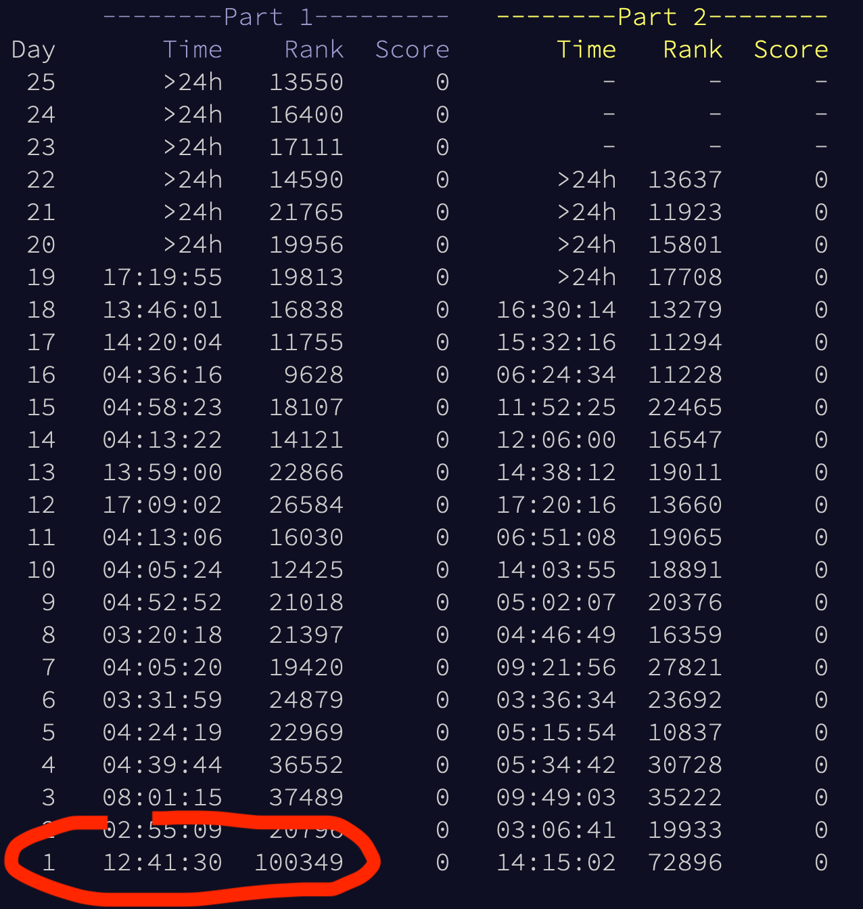
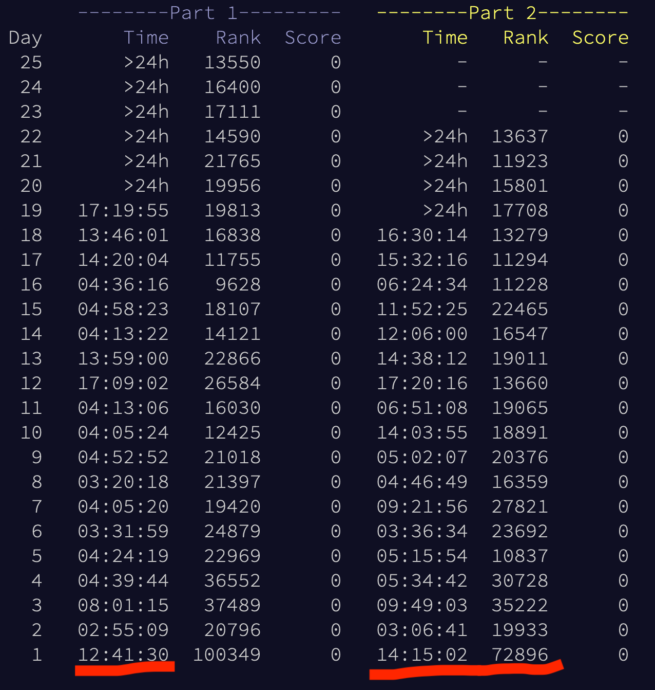
{kind=link}
- Quick hacking in browser console
- Same + regex
- First graph
- TDD and it worked 😱
describe('iterator', () => {
it('moves to next state - easy scenario', () => {
// given
const toTest = iterator(
`Card 172: 92 9 73 82 15 6 44 28 88 34 | 99 78 11 46 9 36 89 65 17 8 16 94 68 63 12 54 25 33 69 47 13 38 93 50 59
Card 173: 31 18 13 56 72 | 74 77 10 23 35 67 36 11`);
expect(toTest.state).toEqual(new Map([[172, 1], [173, 1]]));
// when
toTest.next();
// then
expect(toTest.state).toEqual(new Map([[172, 1], [173, 2]]));
expect(toTest.hasNext()).toBe(true);
- Quick hacking in browser console
- Same + regex
- First graph
- TDD and it worked 😱
-
First issues
-
Map? OOM - Brute force? 18m
-
 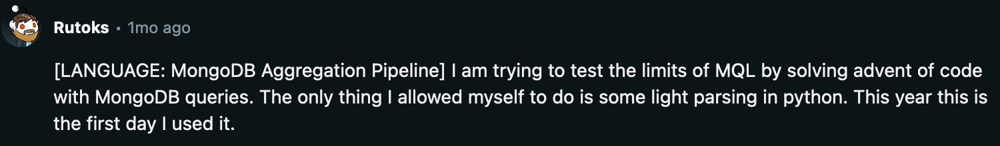
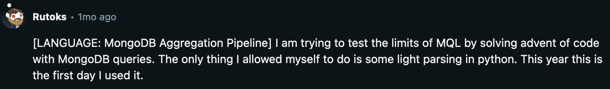
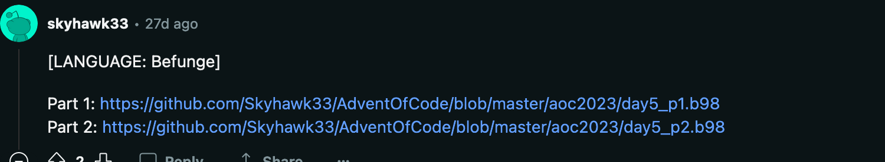
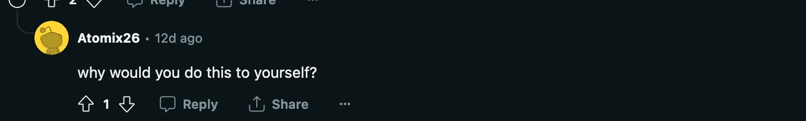
<v p:0*2a;=list size; n(4"FRTH"(4"TOYS" ;;
;stack = [next values] [current values] dst_range src_range ln i; ;;
;depth = (n+4)+ (n+4-1) - 4 3 2 1 0;
> gk& 00g 01p v
>$ a, & v;read line; ;Vi<src?; ;Vi>ln?; ;Ni=dst+(Vi-src),size-=1;
> >&& 01g:!#v _ :3+P 3P- :0\`!] :3P \`] 4P+ 01g4+0\-L :3+L$ 01g1-01p v
>$ 0g:01p :!|!:-1 < ! | |
$^;reset; < > :P. ^ : ;i--; $ $
|`\0: -0'_^# `a: ~v#< 0 $k3 < ^ -1 < < <
;\n\n = new map; >$ v
> \a*+ ^ @,a.,a N $$(4"IMTH" D <
;we have to read the first number;
;of a new group by hand because ;
;we cant detect line breaks ;
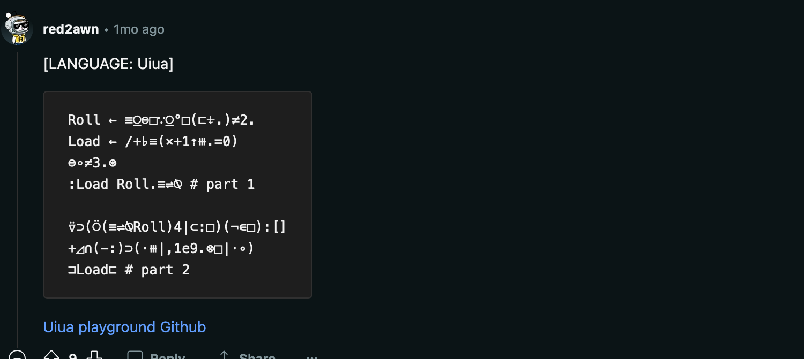
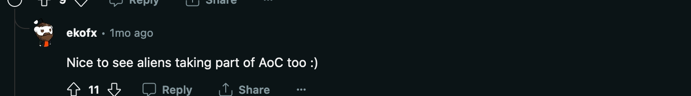
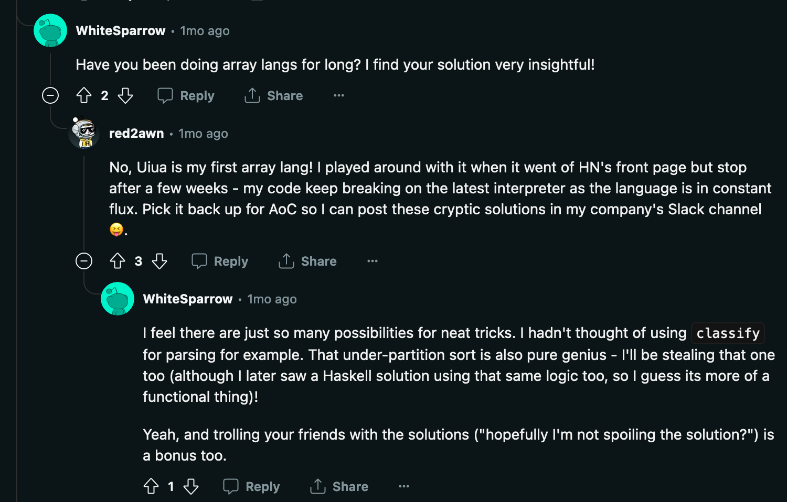
- Python
- Rust
- C#, JS/TS, Kotlin, Java
- Zig
- D
- APL
- Vim keystrokes
- Quick hacking in browser console
- Same + regex
- First graph
- TDD and it worked 😱
- First issues
Day 8
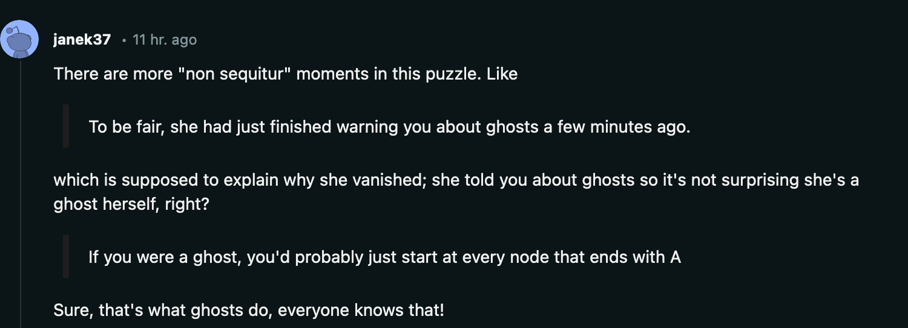
describe('parseInstructions', () => {
it('loops through instructions till needed', () => {
const first = parseInstructions('RL');
const second = parseInstructions('LLR');
expect(first.next().value).toEqual(1);
expect(second.next().value).toEqual(0);
expect(first.next().value).toEqual(0);
expect(second.next().value).toEqual(0);
export function* parseInstructions(input) {
const instructions = input.split('');
const dictionary = {
'L': 0,
'R': 1
};
for (let index = 0; ; index++) {
yield dictionary[instructions[index % instructions.length]];
}
}
+Least Common Multiple, +GCD
Day 10
const resizedTimes3 = new Map([
['J', [
'.|.',
'-J.',
'...',
]]
Day 11
Priority Queue
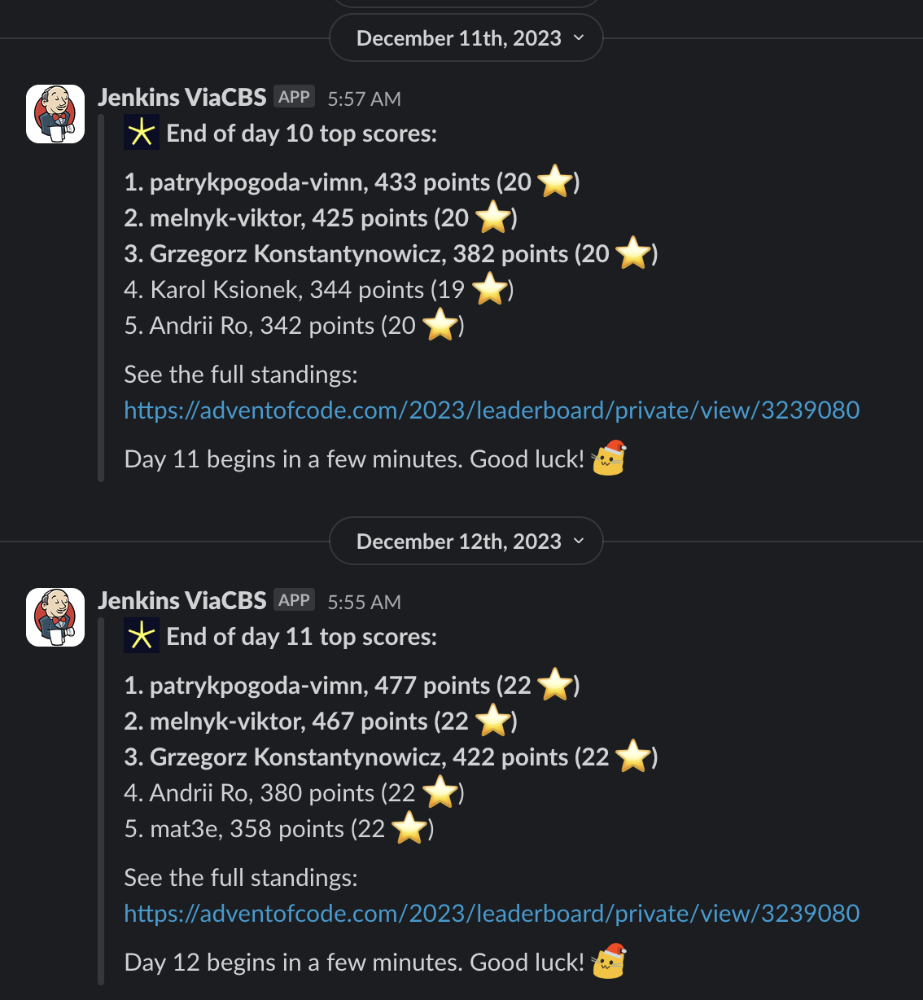
Day 12
console.time();
console.log(countAllArrangements(`input here`));
console.timeEnd();
Day 13
Mirror? One or many?
function transpose(arr) {
return arr[0].map((_, i) => arr.map(row => row[i]));
}
Day 14
transpose!- Array of stack of results
- EZ!
Mappreserves the order - Performant? DP? Premature optimization
- Good abstractions = smooth 2nd part
- Pick's theorem, Shoelace formula
Day 19
export function parsePart(input) {
return eval(`(function() { return ${input}; })()`.replaceAll('=', ':'));
}
Day 20
- Redux/Flux, bez TDD
-
Got from HyperNeutrino
- Input data analysis
- Graphviz, looking for cycles
Day 21
- Misleading example
- Even more input data analysis
Dzień 22
Day 23
Longest path
Day 24
- Maths - crossing points
Z3👎🏻
Day 25
Karger's min cut
mat3e.github.io/talks/aoc/Paramount
sauce
{kind=link}